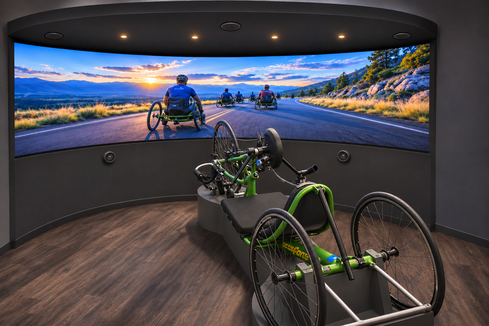
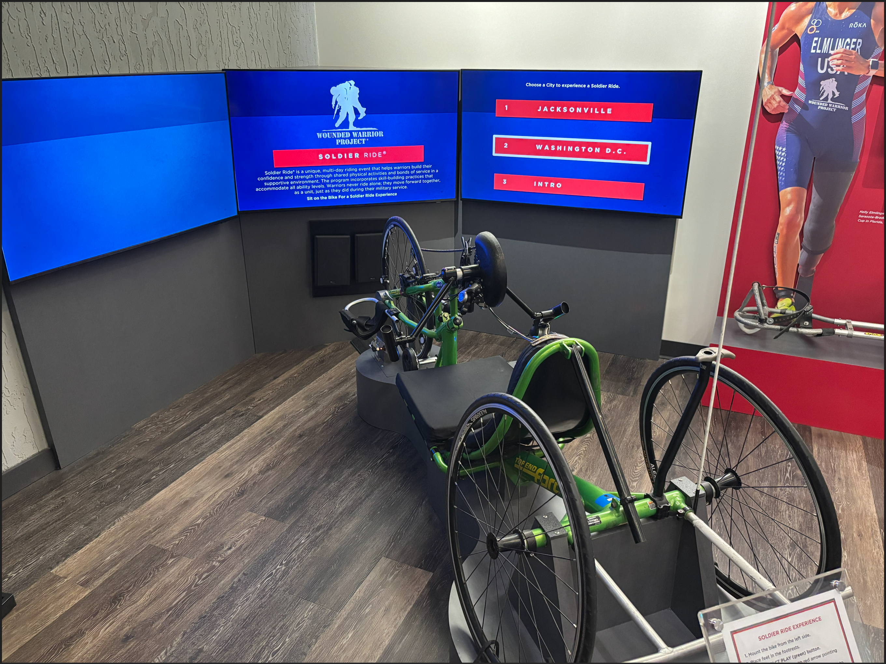
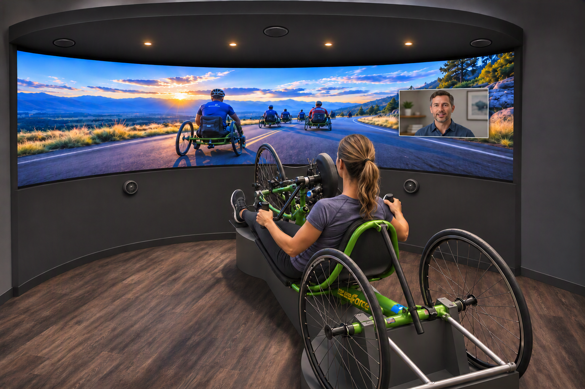
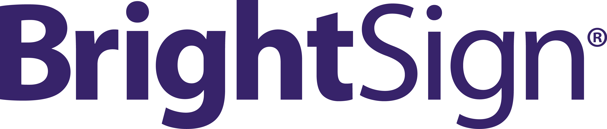

Notice
Background content rolls while the bike is not in use, inviting visitors to take a seat.

Transform a bike simulator into a human story about motion, confidence, connection—and the adaptive tools that help make them possible.

The bike is powerful and authentic, but the current screens read as a media station rather than an environment.
The interaction explains what Soldier Ride is. The next version can help visitors feel why it matters.
The same compact footprint can support a richer arc: meet a warrior, ride alongside a community, then carry the story forward.
“A handcycle is not the story. It is the doorway into a story about reclaiming movement, confidence, and community.”
A single curved DVLED display replaces the three-screen arrangement.
A custom structure frames the display and houses the integrated equipment.
Left, center and right speakers recessed into the booth ceiling create an enveloping sound field.
Fans in the booth face provide simulated wind and gentle airflow.
A seat sensor starts the welcome and records occupancy for usage metrics.
A BrightSign player runs the experiential content and responds to exhibit inputs.
Background content rolls while the bike is not in use, inviting visitors to take a seat.
Sitting down triggers a 30-second introduction on one side of the screen while the visitor selects a ride.
The visitor pedals along with the selected route. Panoramic footage, sound and a simulated breeze bring the ride into the booth.
The road dissolves into the person behind the ride: effort, support, setbacks, and community.
A simple next step—learn, share, support, or explore another story—extends the experience beyond the seat.

Ride alongside a community. Hear what the journey means in a warrior’s own words.
A short introduction connects a personal goal with the adaptive handcycle that helps make it possible.
Windowed stories play alongside route footage at planned moments, sharing the support and relationships behind the ride.
The closing reflection returns to the person: growing confidence, community and life beyond the ride, with an invitation to learn more.
Intuiface or BSN.cloud puts day-to-day content updates in your team’s hands.

BSN.cloudReplace background videos, introductions and ride content through a managed content workflow.
Keep the ride in view while a timeline triggers testimonial windows, captions and other content layers.
Keep offline-first playback at the exhibit. Add remote publishing, player status and support when connected.
Record session counts and time in the seat. Use those metrics to guide future content updates.
CMS selection, licensing and timeline integration will be confirmed during detailed design.
Keep the authentic handcycle at the heart of Soldier Ride. Surround it with a more immersive setting, a warrior’s perspective and stories your team can keep growing.
Concept imagery is illustrative. Final exhibit design and content will be developed with Wounded Warrior Project and participating warriors.